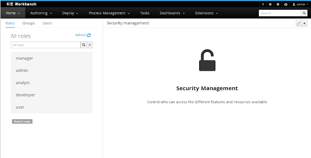
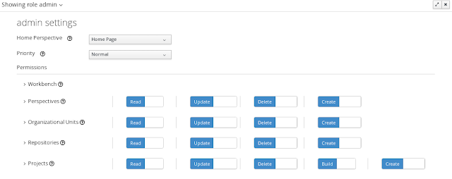

Security management in jBPM & Drools workbenches
In that regards, a first implementation of the user & group management features was announced about 3 months ago (see the announcement here). This is the second article of this series and it describes what are permissions and how they extend the user and group management features in order to deliver a full security management solution. So before going further, let’s introduce some concepts:
Basic concepts
Roles vs Groups
Users can be assigned with more than one role and/or group. It is always mandatory to assign at least one role to the user, otherwise he/she won’t be able to login.
Permissions
- View a perspective
- Save a project
- View a repository
- Delete a dashboard
A permission can be granted or denied and it can be global or resource specific. For instance:
- Global: “Create new perspectives”
- Specific: “View the home perspective”
As you can see, a permission is a resource + action pair. In the concrete case of a perspective we have: read, update, delete and create as the actions available. That means that there are four possible permissions that could be granted for perspectives.
Permissions do not necessarily need to be tied to a resource. Sometimes it is also neccessary to protect access to specific features, like for instance “generate a sales report”. That means, permissions can be used not only to protect access to resources but also to custom features within the application.
Authorization policy
The set of permissions assigned to every role and/or group is called the authorization (or security) policy. Every application contains a single security policy which is used every time the system checks a permission.
The authorization policy file is initialized from a file called WEB-INF/classes/security-policy.properties under the application’s WAR structure.
NOTE: If no policy is defined then the authorization management features are disabled and the application behaves as if all the resources & features were granted by default.
Here is an example of a security policy file:
# Role “admin”
role.admin.permission.perspective.read=true
role.admin.permission.perspective.read.Dashboard=false
Every entry defines a single permission which is assigned to a role/group. On application start up, the policy file is loaded and stored into memory.
Usage
The Security Management perspective is available under the Home section in the workbench’s top menu bar.
The next screenshot shows how this new perspective looks:
 |
Security Management Perspective |
Compared to the previous version this new perspective integrates into a single UI the management of roles, groups & users as well as the edition of the permissions assigned to both roles & groups. In concrete:
- List all the roles, groups and users available
- Create & delete users and groups
- Edit users, assign roles or groups, and change user properties
- Edit both roles & groups security settings, which include:
- The home perspective a user will be directed to after login
- The permissions granted or denied to the different workbench resources and features available
All of the above together provides a complete users and groups management subsystem as well as a permission configuration UI for protecting access to some of the workbench resources and features.
Role management
By selecting the Roles tab on the left sidebar, the application shows all the application roles:
Unlike users and groups, roles can not be created nor deleted as they come from the application’s web.xml descriptor.
NOTE: User & group management features were described in detail in this previous article.
 |
| Security settings editor |
Security Settings
The above editor is used to set several security settings regarding both roles and groups.
Home perspective
This is the perspective where the user is directed after login. This makes it possible to have different home pages for different users, since users can be assigned to different roles or groups.
Priority
It is used to determine what settings (home perspective, permissions, …) have precedence for those users with more that one role or group assigned.
Without this setting, it wouldn’t be possible to determine what role/group should take precedence. For instance, an administrative role has higher priority than a non-administrative one. For users with both administrative and non-administrative roles granted, administrative privileges will always win, provided the administrative role’s priority is greater than the other.
Permissions
Currently, the workbench support the following permission categories.
- Workbench: General workbench permissions, not tied to any specific resource type.
- Perspectives: If access to a perspective is denied then it will not be shown in any of application menus. Update, Delete and Create permissions change the behaviour of the perspective management plugin editor.
- Organizational Units: Sets who can Create, Update or Delete organizational units from the Organizational Unit section at the Administration perspective. Sets also what organizational units are visible in the Project Explorer at the Project Authoring perspective.
- Repositories: Sets who can Create, Update or Delete repositories from the Repositories section at the Administration perspective. Sets also what repositories are visible in the Project Explorer at the Project Authoring perspective.
- Projects: In the Project Authoring perspective, sets who can Create, Update, Delete or Build projects from the Project Editor screen as well as what projects are visible in the Project Explorer.
For perspectives, organizational units, repositories and projects it is possible to define global permissions and add single instance exceptions afterwards. For instance, Read access can be granted to all the perspectives and deny access just to an individual perspective. This is called the grant all deny a few strategy.
The opposite, deny all grant a few strategy is also supported:
NOTE: In the example above, the Update and Delete permissions are disabled as it does not makes sense to define such permissions if the user is not even able to read perspectives.
Security Policy Storage
The security policy is stored under the workbench’s VFS. Most concrete, in a GIT repo called “security”. The ACL table is stored in a file called “security-policy.properties” under the “authz” directory. Next is an example of the entries this file contains:
role.admin.home=HomePerspective
Every time the ACL is modified from the security settings UI the changes are stored into the GIT repo. Initially, when the application is deployed for the first time there is no security policy stored in GIT. However, the application might need to set-up a default policy with the different access profiles for each of the application roles.
- Check if an active policy is already stored in GIT
- If not, then check if a policy has been defined under the webapp’s classpath
- If found, such policy is stored under GIT
The above is an auto-deploy mechanism which is used in the workbench to set-up its default security policy.
One slight variation of the deployment process is the ability to split the “security-policy.properties” file into small pieces so that it is possible, for example, to define one file per role. The split files must start by the “security-module-” prefix, for instance: “security-module-admin.properties”. The deployment mechanism will read and deploy both the “security-policy.properties” and all the optional “security-module-?.properties” found on the classpath.
Notice, despite using the split approach, the “security-policy.properties” must always be present as it is used as a marker file by the security subsystem in order to locate the other policy files. This split mechanism allows for a better organization of the whole security policy.
Authorization API
@Inject
AuthorizationManager authzManager;
Perspective perpsective1;
User user;
...
boolean result = authzManager.authorize(perspective1, user);
Using the fluent API can also be expressed as:
authorizationManager.check(perspective1, user)
.granted(() -> ...)
.denied(() -> ...); The security check calls always use the permissions defined in the security policy.

{kind=link}
{kind=link}
{kind=link}
{kind=link}
{kind=link}
{kind=link}
{kind=link}